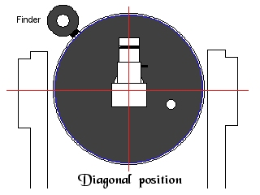
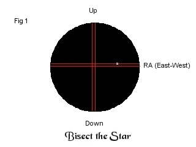
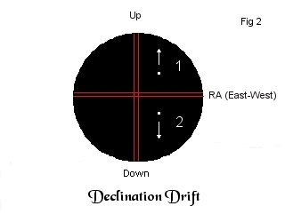
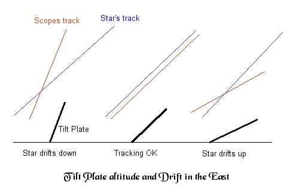
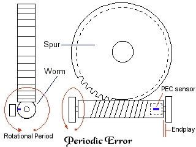
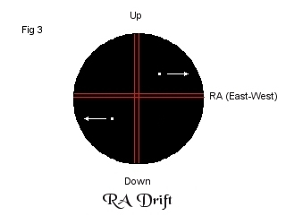

|
Drift alignment with an LX90 using a diagonal Drift alignment In Detail 1) Your tripod must be level and wedge in close polar alignment. Align the scope doing a one star alignment with the Autostar, or Kochab's clock and an easy or two star alignment with the Autostar. Your reticle eyepiece should be perpendicular to the centerline of the OTA (diagonal facing up), and the eyepiece crosshairs aligned to RA and declination axes. A star placed on the crosshairs should stay on them when slewing slowly in RA (left/right) or declination (up/down) from one side of the FOV to the other. 
 Note that a diagonal prism or mirror shows correct North / South orientation, but East / West are still reversed. Wedge azimuth adjustment for #2 drift (Fig 2) (or) Wedge azimuth adjustment for #1 drift (Fig
2) 3)
Adjust azimuth adjuster until drift is minimal (5 minutes
or more without drift) Wedge latitude adjustment for #2 drift (fig
2) (or) Wedge latitude adjustment for #1 drift
(fig 2)  5) For
higher precision (i.e., astrophotography), go back to #2
and verify 7 minutes tracking or more without declination
drift, Readjust as needed. 6) Check the RA (East-West) drift at the southern meridian, and adjust the custom tracking speed until RA speed drift is minimized (Fig 3). After longer than 3 minutes, periodic error will probably start to become evident. Custom tracking speeds will not remove PE, so don't try to remove it by changing the speed. You'll have to manually, or autoguide, out the periodic error (see update below). A good worm/gear set will show a few arc-seconds of smooth drift. Newer, less worn in gears, or poorly made gearsets may show as much as a few arc-minutes with a possible "bump" at the period of the worm. The LX90's worm period is ~ 9 minutes.  Some mounts, like the LX200, use periodic
error correction (PEC). PEC is accomplished by marking
the rotational period with a sensor, and storing the
error in memory. A user must guide out the error while
recording. The recorded guide movements are utilized when
PEC is turned on.
7) If the star drifts off to the right of the vertical crosshair, increase the tracking speed. If it drifts to left of the vertical crosshair, reduce the speed. Remember that a diagonal reverses left and right. Custom tracking is under Setup/Telescope/Tracking, then scroll down to Custom, and hit Enter. I've found that speeds from 8 to 12 are normal, so high numbers don't neccesarily mean something's wrong. After a couple years of use, it's settled down to a +3 on my scope.  Quick and Dirty
|
| Southern Meridian | Problem | Adjust Azimuth | Adjust Azimuth | - | - |
| Drifts North (Up) | Az too far West | clockwise |
- | - | - |
| Drifts South (Down) | Az too far East | - | counterclockwise | - | - |
| Eastern Celestial Equator | Problem | - | - | Adjust Latitude | Adjust Latitude |
| Drifts North (Up) | Alt too Low | - | - | tilt plate up | - |
| Drifts South (Down) | Alt too High | - | - | - | tilt plate down |
|| Back to Contents || Wedge adapter || Focuser || Azimuth
adjuster || Weight Set || Dovetail ||
||
Compass || Polar || Pinouts || Tours/Ephemerides || LED Markers || Balance || Focuser
Bearings ||